物理层概述
实现功能
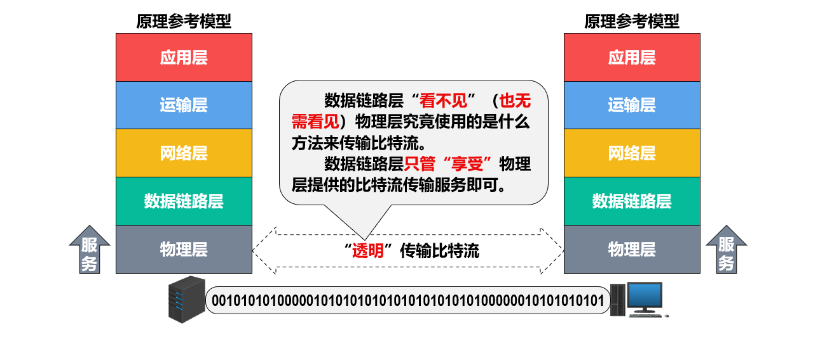
接口特性
物理层考虑的是如何在连接各种计算机的传输介质上传输比特流，而不指具体的传输介质。
网络中的硬件设备和传输介质的种类繁多，通信方式也各不相同。物理层应尽可能屏蔽这些差异，让数据链路层感觉不到这些差异，使数据链路层只需考虑如何完成本层的协议和服务。
物理层的主要任务是确定与传输介质的接口有关的一些特性：
- 机械特性：指明接口所用接线器的形状和尺寸、引脚数目和排列、固定和锁定装置等。
- 电气特性：指明在接口电缆的各条线上的电压范围、传输速率和距离限制等。
- 功能特性：指明某条线上出现的某一电平的电压的意义，以及每条线的功能。
- 过程特性：也称规程特性，指明对不同功能的各种可能事件的出现顺序。
传输媒体
传输媒体是计算机网络设备之间的物理通路，也称为传输介质或传输媒介。传输媒体并不包含在计算机网络体系结构中。
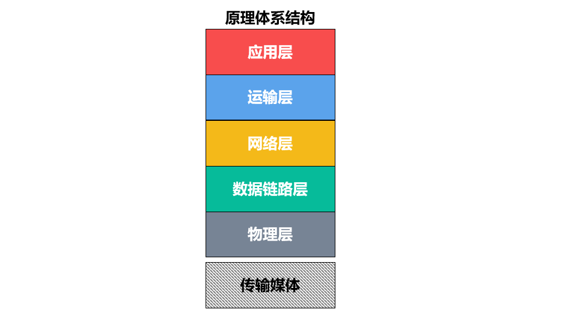
分类
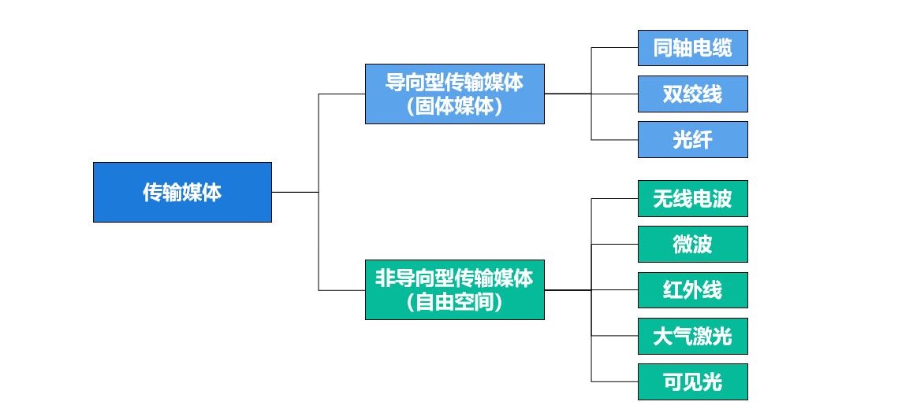
同轴电缆
同轴电缆由内导体、绝缘层、网状编织屏蔽层和塑料外层构成。
因为外导体屏蔽层的作用，所以同轴电缆具有良好的抗干扰特性而被广泛用于传输较高速率的数据。
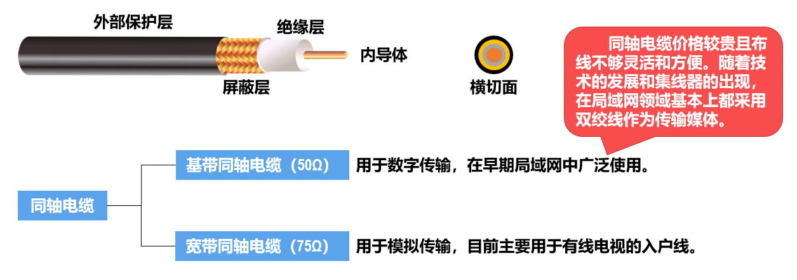
双绞线
双绞线是最常用的传输介质，在局域网和传统电话网中普遍使用。
双绞线由两根采用一定规则并排绞合、相互绝缘的铜导线组成。绞合可减少对相邻导线的电磁干扰。
为了进一步提高抗电磁干扰的能力，还可在双绞线的外面加上一层金属丝编织成的屏蔽层，这就是屏蔽双绞线(STP)。无屏蔽层的双绞线称为非屏蔽双绞线(UTP)。
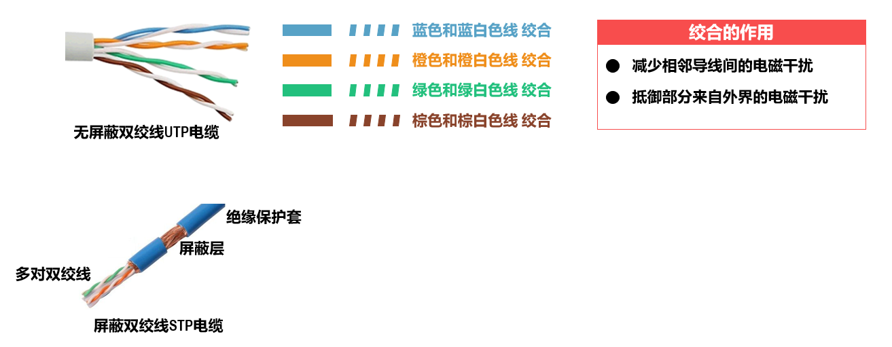
双绞线的价格便宜，模拟传输和数字传输都可使用双绞线，通信距离一般为几千米到数十千米。
双绞线的带宽取决于铜线的粗细和传输的距离。
距离太远时，对于模拟传输，要用放大器放大衰减的信号；对于数字传输，要用中继器来对失真的信号进行整形。
在局域网领域基本上都采用双绞线作为传输介质。
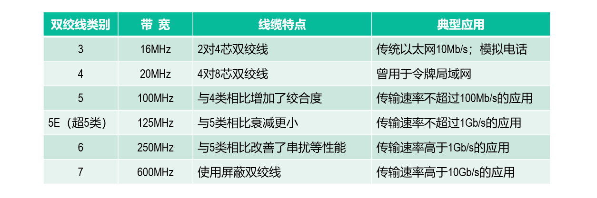
光纤
光纤通信是指利用光导纤维（简称光纤）传递光脉冲来进行通信。有光脉冲表示 1，无光脉冲表示 0。可见光的频率约为 10MHz，因此光纤通信系统的带宽极大。
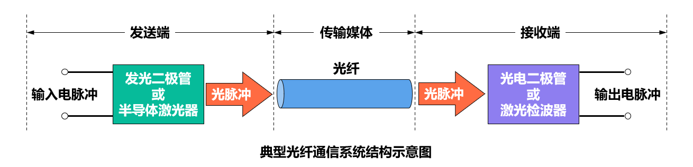
光纤主要由纤芯和包层构成，纤芯很细，包层较纤芯有较低的折射率，光波通过纤芯进行传导。当光线从高折射率的介质射向低折射率的介质时，其折射角将大于入射角。因此，只要入射角大于某个临界角，就会出现全反射，即光线碰到包层时就会折射回纤芯，这个过程不断重复，光也就沿着光纤传输下去。
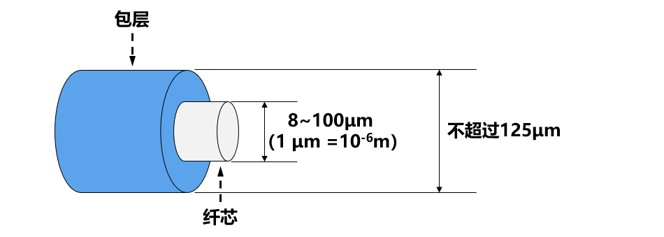
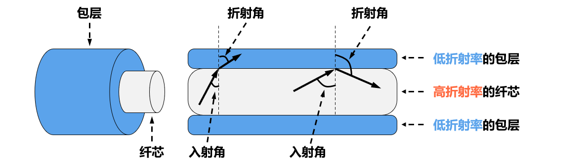
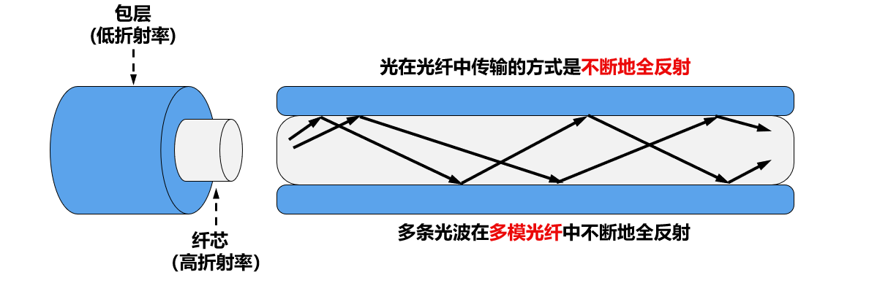
利用光的全反射特性，可让从不同角度入射的多条光线在一根光纤中传输，这种光纤称为多模光纤，多模光纤的光源为发光二极管。光脉冲在多模光纤中传输时逐渐展宽，造成失真，因此多模光纤只适合近距离传输。
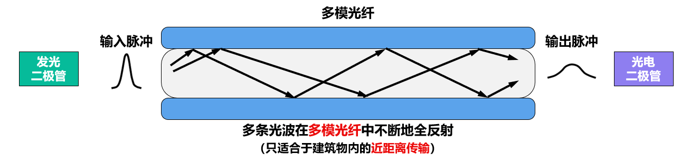
当光纤的直径减小到只有一个光的波长时，光纤就像一根波导那样，可使光线一直向前传播，而不产生多次反射，这样的光纤就是单模光纤。
单模光纤的纤芯很细，制造成本较高。同时，单模光纤的光源是定向性很好的半导体激光器，因此单模光纤的衰减较小，可传输数千米甚至数十千米而不必采用中继器，适合远距离传输。
光纤不仅具有通信容量非常大的优点，而且具有如下特点：
- 传输损耗小，中继距离长，对远距离传输特别经济。
- 抗雷电和电磁干扰性能好，在有大电流脉冲干扰的环境下这尤为重要。
- 无串音干扰，保密性好，不易被窃听或截取数据。
- 体积小，重量轻，在现有电缆管道已拥塞不堪的情况下这特别有利。
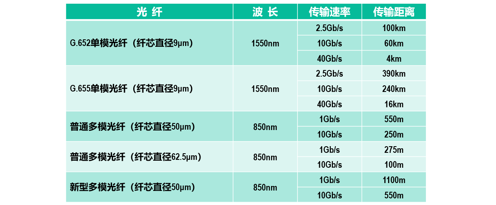
无线传输介质
-
无线电波
无线电波具有较强的穿透能力，可以传输很长的距离，因此广泛用于通信领域，如无线手机通信、计算机网络中的无线局域网（WLAN）等。
因为无线电波使信号向所有方向散播，所以有效距离范围内的接收设备无须对准某个方向，就可与无线电波发射者进行通信连接，大大简化了通信连接。这也是无线电波传输的最重要优点之一。
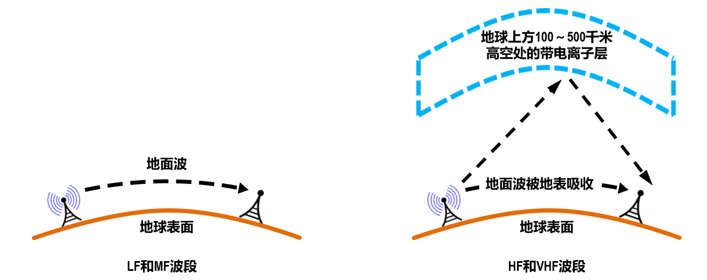
-
微波、红外线和激光
目前高带宽的无线通信主要使用三种技术：微波、红外线和激光，它们都需要在发送方和接收方之间有一条视线通路，有很强的方向性，沿直线传播。
微波通信的频率较高，频段范围也很宽，载波频率通常为 2 ～ 40GHz，因此通信信道的容量大。与通常的无线电波不同，微波通信的信号是沿直线传播的，因此在地面上的传播距离有限，超过一定距离后就要使用中继站来接力。
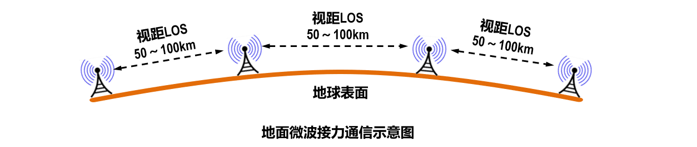
卫星通信利用地球同步卫星作为中继来转发微波信号，可以克服地面微波通信距离的限制 3 三颗相隔 120° 的同步卫星几乎就能覆盖整个地球表面，因此基本能实现全球通信。卫星通信的优点是通信容量大、距离远、覆盖广，缺点是保密性差、端到端传播时延长。
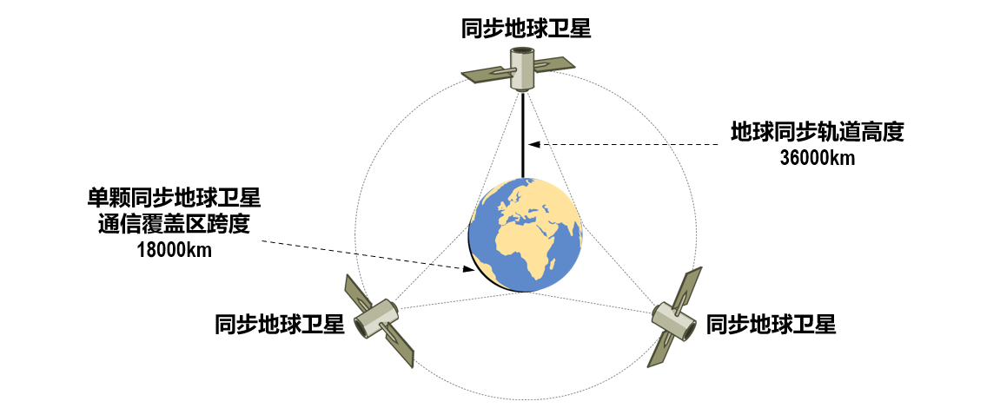
不同的是，红外通信和激光通信将要传输的信号分别转换为各自的信号格式，即红外光信号和激光信号，再直接在空间中传播。
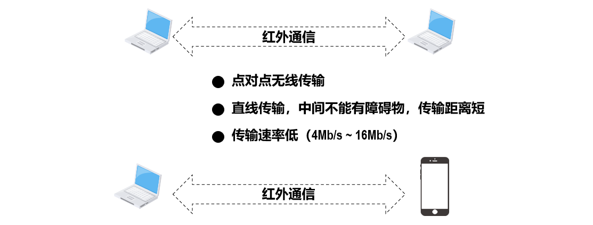
传输方式
数据传输方式分为串行传输和并行传输。
-
串行传输
逐比特地按序依次传输。适用于长距离通信，如计算机网络。
-
并行传输
若干比特通过多个通信信道同时传输。适用于近距离通信，常用于计算机内部，如 CPU 与主存之间。
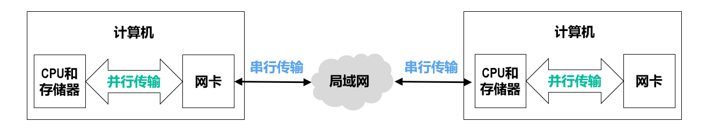
从通信双方信息的交互方式看，可分为三种基本方式：
-
单向通信
只有一个方向的通信而没有反方向的交互，如无线电广播、电视广播等。
-
半双工通信
通信双方都可发送或接收信息，但任何一方都不能同时发送和接收信息。
-
全双工通信
通信双方可同时发送和接收信息。单向通信只需一个信道，而半双工通信或全双工通信都需要两个信道，每个方向一个信道。
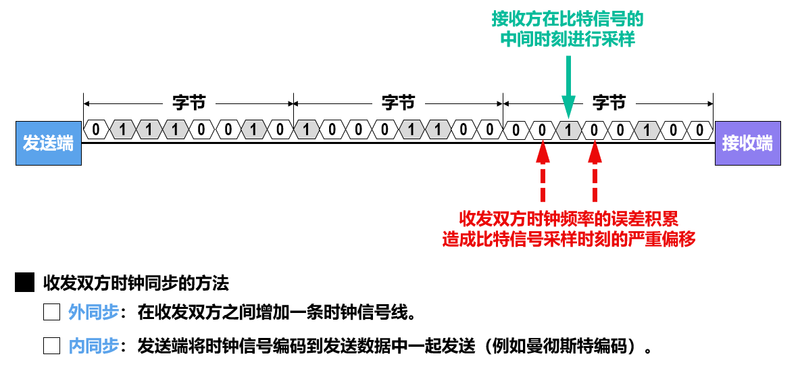
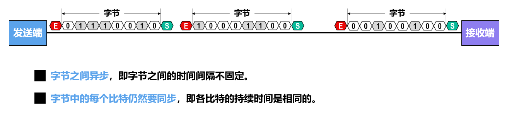
通信基本概念
数据、信号、码元
通信的目的是传输信息，如文字、图像和视频等。
数据是指传送信息的实体。
信号是数据的电气或电磁表现，是数据在传输过程中的存在形式。
数据和信号都有模拟或数字之分：
- 模拟数据（或模拟信号）的取值是连续的：
- 数字数据（或数字信号）的取值是离散的。
在通信系统中，常用一个固定时长的信号波形（数字脉冲）表示一位 k 进制数字，代表不同离散数值的基本波形就称为码元。
码元是数字通信中数字信号的计量单位，这个时长内的信号称为 k 进制码元，而该时长称为码元宽度。1 码元可携带若干比特的信息量。例如，在使用二进制编码时，只有两种不同的码元：一种代表 0 状态，另一种代表 1 状态。
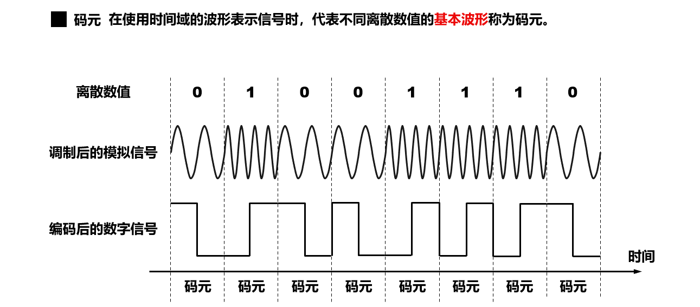
信源、信道、信宿
数据通信系统主要划分为信源、信道和信宿三部分。
信源是产生和发送数据的源头，信宿是接收数据的终点，它们通常都是计算机或其他数字终端装置。
信道是信号的传输介质，一条双向通信的线路包含一个发送信道和一个接收信道。
发送端信源发出的信息需要通过变换器转换成适合在信道上传输的信号，而通过信道传输到接收端的信号首先由反变换器转换成原始信息，然后发送给信宿。
噪声源是信道上的噪声及分散在通信系统其他各处的噪声的集中表示。
-
信道按传输信号形式的不同，分为传送模拟信号的模拟信道和传送数字信号的数字信道两大类；
-
信道按传输介质的不同，分为无线信道和有线信道。
信道上传送的信号有基带信号和宽带信号之分。
- 基带信号首先将数字信号 1 和 0 直接用两种不同的电压表示，然后送到数字信道上传输（称为基带传输）。
- 宽带信号首先将基带信号进行调制，形成频分复用模拟信号，然后送到模拟信道上传输（称为宽带传输）。
速率，波特、带宽
速率是指数据传输速率，表示单位时间内传输的数据量，常有两种描述形式。
-
码元传输速率
又称波特率，表示单位时间内数字通信系统所传输的码元数（也称调制速率或符号速率），单位是波特(Baud)。
1 波特表示数字通信系统每秒传输 1 个码元。
码元既可以是多进制的，又可以是二进制的，码元速率与进制数无关。
-
信息传输速率
又称比特率，表示单位时间内数字通信系统传输的二进制码元数（即比特数），单位是比特/秒(b/s)。
Tip
波特和比特是两个不同的概念，但波特率与比特率在数量上又有一定的关系。若一个码元携带比特的信息量，则波特率 M Baud 对应的比特率为 Mn b/s。
在模拟信号系统中，带宽（又称频率带宽）用来表示某个信道所能传输信号的频率范围，即最高频率与最低频率之差，单位是赫兹(Hz)。
在计算机网络中，带宽用来表示网络的通信线路所能传输数据的能力，即最高数据率；显然，此时带宽的单位不再是 Hz，而是 b/s。
编码与调制
信号是数据的具体表示形式，数据无论是数字的还是模拟的，为了传输的目的，都要转换成信号。
将数据转换为模拟信号的过程称为调制，将数据转换为数字信号的过程称为编码。
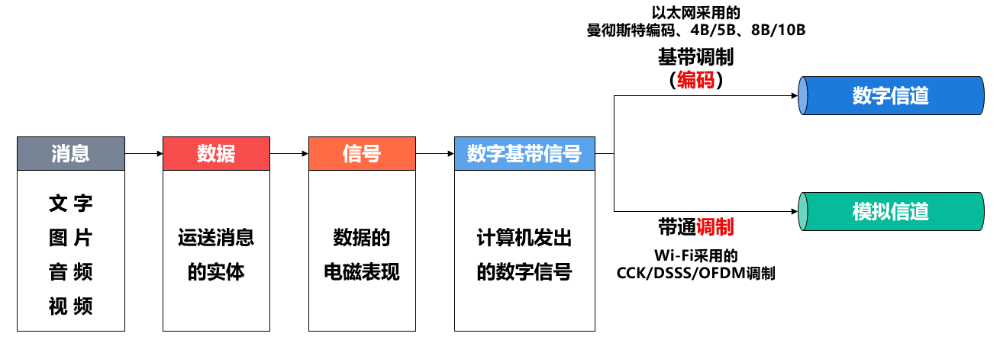
数字数据可通过数字发送器转换为数字信号传输，也可通过调制器转换成模拟信号传输；同样，模拟数据可通过 PCM 编码器转换成数字信号传输，也可通过放大器调制器转换成模拟信号传输。
这样，就形成了如下 4 种编码与调制方式。
数字数据-(编码)→ 数字信号
数字数据编码为数字信号数字数据编码用于基带传输中，即在基本不改变数字数据信号频率的情况下，直接传输数字信号。
具体用什么样的数字信号表示 0 及用什么样的数字信号表示 1，就是所谓的编码。编码的规则有多种，只要能有效区分 0 和 1 即可。
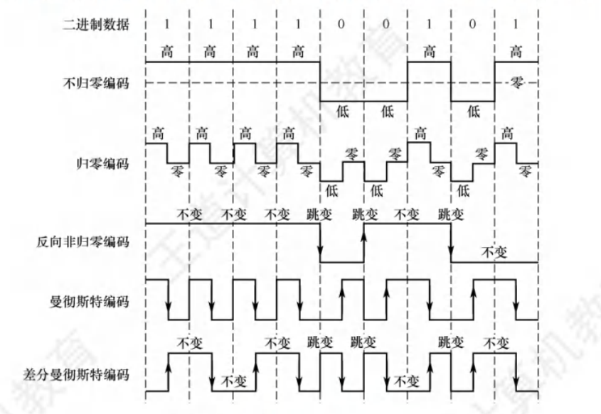
常用的数字数据编码有以下 5 种
-
归零编码(RZ, Return Zero Code)
用高电平表示 1、低电平表示 0（或者相反），每个码元的中间均跳变到零电平（归零），接收方根据该跳变调整本方的时钟基准，这就为收发双方提供了自同步机制。
因为归零需要占用一部分带宽，所以传输效率受到了一定的影响。
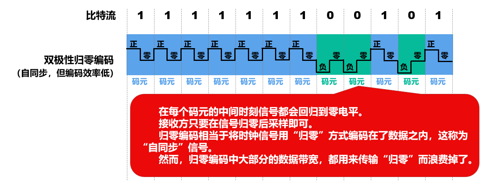
-
非归零编码(NRZ, Non Return Zero Code)
与 RZ 编码的区别是不用归零，一个时钟全部用来传输数据，编码效率最高。
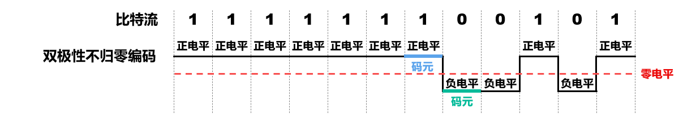
但 NRZ 编码的收发双方存在同步问题，为此需要双方都带有时钟线。
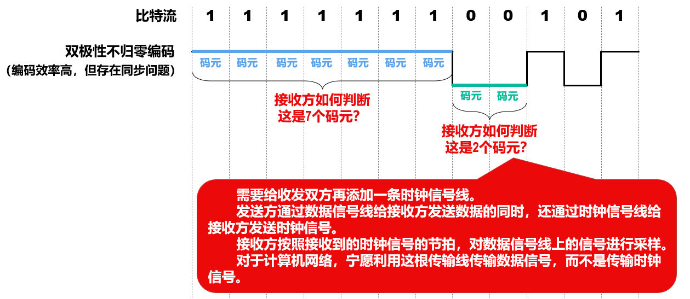
-
反向非归零编码(NRZI, Non Return Zero Inverted Code)
与 NRZ 编码的区别是用电平的跳变表示 0、电平保持不变表示 1。
跳变信号本身可作为一种通知机制。这种编码方式集成了前两种编码的优点，既能传输时钟信号，又能尽量不损失系统带宽。
USB2.0 的编码方式就是 NRZI 编码。
-
曼彻斯特编码
每个码元的中间都发生电平跳变，电平跳变既作为时钟信号（用于同步），又作为数据信号。
可用向下跳变表示 1、向上跳变表示 0，或者采用相反的规定。
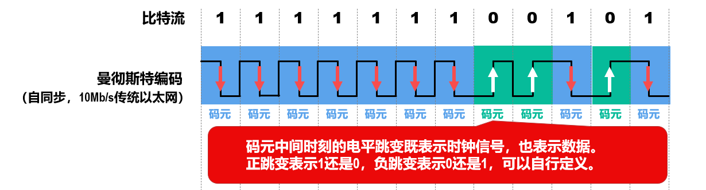
Tip
曼彻斯特编码的每个比特需要两个信号周期，信号率是数据率的 2 倍，编码效率是 50%。
因为以太网采用曼彻斯特编码，每位数据（1 比特，对应信息传输速率）都需要两个电平（两个脉冲信号，对应码元传输速率）来表示，因此波特率是数据率的 2 倍。
因此若有一个以太网的波特率是，则数据率为。
-
差分曼彻斯特编码
每个码元的中间都发生电平跳变，与曼彻斯特编码不同的是，电平跳变仅表示时钟信号，而不表示数据。
数据的表示在于每个码元开始处是否有电平跳变，无跳变表示 1，有跳变表示 0。
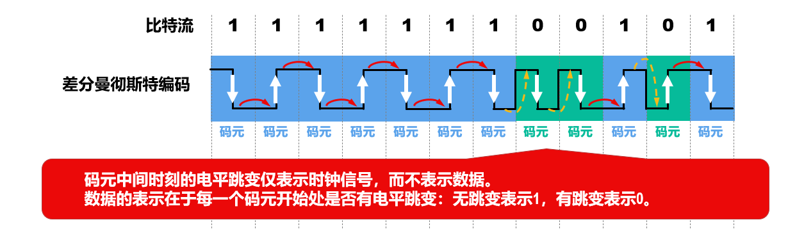
差分曼彻斯特编码拥有更强的抗干扰能力。
在传输大量连续 1 或连续 0 的情况下，差分曼彻斯特编码信号比曼彻斯特编码信号的变化少。 在噪声干扰环境下，检测有无跳变比检测跳变方向更不容易出错，因此差分曼彻斯特编码信号比曼彻斯特编码信号更易于检测。 在传输介质接线错误导致高低电平翻转的情况下，差分曼彻斯特编码仍然有效。
曼彻斯特编码和差分曼彻斯特编码在每个码元的中间都发生电平跳变，相当于将一个码元一分为二，编码速率是码元速率的 2 倍，二者所占的频带宽度是原始基带宽度的 2 倍。
标准以太网使用曼彻斯特编码，而差分曼彻斯特编码则用于宽带高速网中。
模拟数据-(编码)→ 数字信号
主要包括三个步骤，即采样、量化和编码，常用于对音频信号进行编码的 PCM 编码。
首先介绍采样定理：在将模拟信号转换成数字信号时，假设原始信号中的最大频率为 f，那么采样率 f 采必须大于或等于最大频率 f 的 2 倍，才能保证采样后的数字信号完整保留原模拟信号的信息。
采样定理又称奈奎斯特定理。
- 采样：对模拟信号进行周期性扫描，将时间上连续的信号变成时间上离散的信号。
- 量化：将采样得到的电平幅值按照一定的分级标度转换为对应的数值并取整，这样就将连续的电平幅值转换为了离散的数字量。采样和量化的实质就是分割和转换。
- 编码：将量化得到的离散整数转换为与之对应的二进制编码。
数字数据-(调制)→ 模拟信号
数字数据调制技术在发送端将数字信号转换为模拟信号，而在接收端将模拟信号还原为数字信号，分别对应于调制解调器的调制和解调过程。
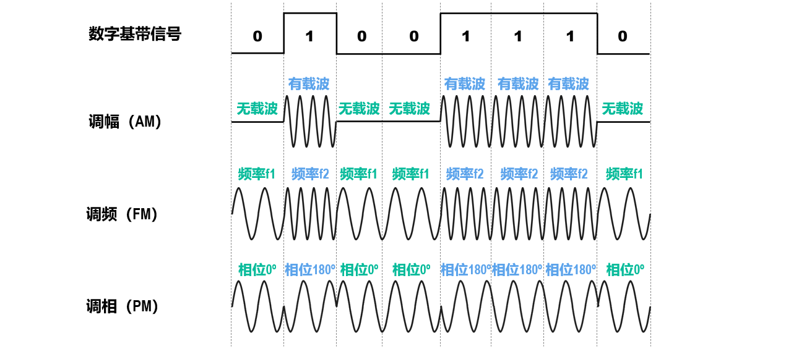
-
调幅(AM)或幅移键控(ASK)
通过改变载波的振幅来表示数字信号 1 和 0。例如，用有载波和无载波输出分别表示 1 和 0。这种方式比较容易实现，但抗干扰能力差。
A , Amplitude
若有 n 种幅度则说明 1 码元可以携带 个 。
-
调频(FM)或频移键控(FSK)
通过改变载波的频率来表示数字信 号 1 和 0。例如，用频率 f 和频率分别表示 1 和 0。这种方式容易实现，抗干扰能力强，目前应用较广泛。
F , Frequency
若有 n 种频率则说明 1 码元可以携带 个 。
-
调相(PM)或相移键控(PSK)
通过改变载波的相位来表示数字信号 1 和 0，又分为绝对调相和相对调相。例如，用相位 0 和 π 分别表示 1 和 0，是一种绝对调相方式。
P , Phase
若有 n 种相位则说明 1 码元可以携带 个 。
-
正交幅度调制(QAM)
在频率相同的前提下，将 AM 与 PM 结合起来，形成叠加信号。
设波特率为，采用个相位，每个相位有种振幅，则该 QAM 的数据传输速率为（单位为 b/s）
若有 个相位，每个相位有种振幅则说明 1 码元可以携带 个 。
模拟数据-(调制)→ 模拟信号
为了实现传输的有效性，可能需要较高的频率。这种调制方式还可使用频分复用(FDM)技术，充分利用带宽资源。电话机和本地局交换机采用模拟信号传输模拟数据的编码方式。
信道的极限容量
任何实际的信道都不是理想的，信号在信道上传输时会不可避免地产生失真。
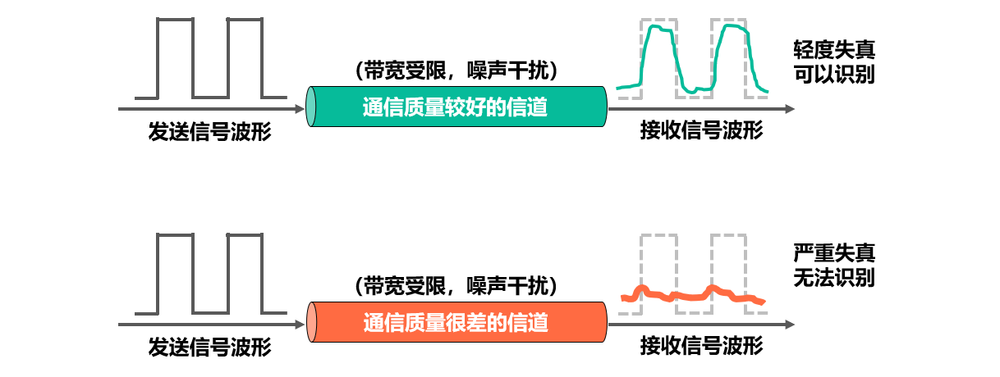
但是，只要接收端能够从失真的信号波形中识别出原来的信号，这种失真对通信质量就没有影响。但是，若信号失真很严重，则接收端就无法识别出每个码元。
奈奎斯特定理(奈氏准则)
具体的信道所能通过的频率范围总是有限的。
信号中的许多高频分量往往不能通过信道，否则在传输中就会衰减，导致接收端收到的信号波形失去码元之间的清晰界限，这种现象称为码间串扰。
奈奎斯特定理规定：在理想低通（没有噪声、带宽有限）信道中，为了避免码间串扰，极限码元传输速率（波特率）为
其中是信道的频率带宽（单位为 Hz），是波特率（单位为码元/秒）。
若用 V 表示每个码元的离散电平数目（码元的离散电平数目是指有多少种不同的码元，若有 16 种不同的码元，则需要 4 个二进制位，因此数据传输速率是码元传输速率的 4 倍），则极限数据率为
对于奈氏准则，有以下结论：
- 在任何信道中，码元传输速率是有上限的。若传输速率超过上限，则会出现严重的码间串扰问题，使得接收端不可能完全正确地识别码元。
- 信道的频带越宽（即通过的信号高频分量越多），就越可用更高的速率有效地传输码元。
- 奈氏准则给出了码元传输速率的限制，但并未限制信息传输速率，即未对一个码元可以对应多少个二进制位给出限制。
因为码元传输速率受奈氏准则制约，所以要提高数据传输速率，就要设法使每个码元携带更多比特的信息量，此时需要采用多元制的调制方法。
香农定理
实际的信道会有噪声，噪声是随机产生的。
香农定理给出了带宽受限且有高斯噪声干扰的信道的极限数据传输速率，当用该速率传输数据时，不会产生误差。香农定理定义为
式中，为信道的极限信息传输速率(b/s)，为信道的频率带宽(Hz)，为信道内所传输信号的平均功率，为信道内的高斯噪声功率。
信噪比，即信号的平均功率与噪声的平均功率之比，计算公式为
例如，当时，信噪比为；而当时，信噪比为。
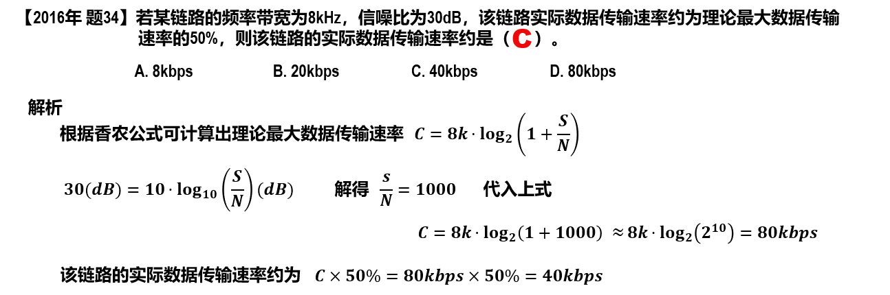
对于香农定理，有以下结论：
- 信道的带宽或信道中的信噪比越大，信息的极限传输速率越高。
- 对一定的传输带宽和一定的信噪比，信息传输速率的上限是确定的。
- 只要信息传输速率低于信道的极限传输速率，就能找到某种方法实现无差错的传输。
- 香农定理得出的是极限信息传输速率，实际信道能达到的传输速率要比它低不少。
信噪比 S/N 和 10log(s/N)的区别
若噪声功率为 1，信号功率为 100
- 数字形式表示示，信噪比为 100/1=100。
- 分贝形式表示，信噪比为。
二者在数值上等价。区别在于，前者没有单位，后者必须加 dB（分贝）。采用分贝表示的原因是为了更方便表示。
区别
-
奈氏准则指出，码元传输的速率是受限的，不能任意提高，否则接收端就不能正确判定码元所携带的比特数据（因为码元之间存在相互干扰）。
奈氏准则是在理想条件下推导出来的。但在实际条件下，最高码元传输速率要比理想条件下得出的数值小很多。
值得注意的是，奈氏准则并未限制信息传输速率。要提高信息传输速率，就必须使每个码元能够携带许多比特的信息。但是，码元所载的比特数确定后，信道的极限数据率也就确定了。
-
香农定理给出了信息传输速率的极限，即对于一定的传输带宽(Hz)和一定的信噪比，信息传输速率的上限是确定的，这个极限不能突破。
要想提高信息传输速率，要么设法提高传输线路的带宽，要么设法提高信道的信噪比，此外没有其他任何办法。
奈氏准则只考虑了带宽与极限码元传输速率之间的关系，而香农定理不仅考虑了带宽，也考虑了信噪比。这从另一个侧面表明，一个码元对应的二进制位数是有限的。
Tip
若题目中给出了码元与比特数之间的关系，则需受两个公式计算最大数据传输速率应受两者共同限制。
物理层设备
中继器
中继器的主要功能是整形、放大并转发信号，以消除信号经过一长段电缆后产生的失真和衰减，使信号的波形和强度达到所需的要求，进而扩大网络传输的距离。其原理是信号再生（而非简单地放大衰减的信号）。
中继器有两个端口，数据从一个端口输入，从另一个端口发出。端口仅作用于信号的电气部分，而不管是否有错误数据或不适于网段的数据。
中继器是用来扩大网络规模的最简单的廉价互连设备。
中继器两端的网络部分是网段，而不是子网，使用中继器连接的几个网段仍是一个局域网。中继器若出现故障，则对相邻两个网段的工作都产生影响。
因为中继器工作在物理层，所以不能连接两个具有不同速率的局域网。当物理层互连时，各种网络的数据传输速率若不同，则可能出现以下两种情况：
- 发送方的速率高于接收方，接收方来不及接收导致溢出（因为物理层没有流量控制)，数据丢失。
- 接收方的速率高于发送方，不会出现数据丢失的情况，但效率极低。
Tip
若某个网络设备有存储转发功能，则认为它能连接两个不同的协议；若该网络设备无存储转发功能，则认为它不能连接两个不同的协议。所以中继器不能连接不同速率的局域网，也不能连接不同数据链路层协议的局域网（连接后要能达到正常通信的目的）。但中继器可以连接不同介质的局域网，如光纤和双绞线，只要它们具有相同的速率和协议。
物理层互连成功，只表明这两个网段之间可相传送物理层信号，但物理层设备只能转发物理信号，不能识别数据链路层协议，所以并不证可以互相传送数据链路层的帧。因此，仅要求物理层互连时数据链路层协议可以不同，但要达到在数据链路层互通的目的，就要求数据链路层协议也要相同，不然无法正常通信。
从理论上讲，中继器的使用数目是无限的，网络因而也可无限延长。但事实上这是不可能的，因为网络标准中对信号的延迟范围做了具体规定，中继器只能在该范围内进行有效的工作，否则会引起网络故障。
Tip
放大器和中继器都起放大作用，只不过放大器放大的是模拟信号，其原理是放大衰减的信号，而中继器放大的是数字信号，其原理是整形再生衰减的信号。
Tip
中继器或集线器有“5-4-3 规则”，其中“5”表示 5 个网段，“4”表示 4 个中继器或集线器，“3”表示 3 个网段为主机段。也就是说，在一个由中继器或集线器互连的网络中，任意发送方和接收方最多只能经过 4 个中继器、5 个网段。
集线器
集线器(Hub)实质上是一个多端口的中继器。
当 Hub 工作时，一个端口接收到数据信号后，因为信号在从端口到 Hub 的传输过程中已有衰减，所以 Hub 便对该信号进行整形放大，使之再生（恢复）到发送时的状态，紧接着转发到其他所有（除输入端口外）处于工作状态的端口。
若同时有两个或多个端口输入，则输出时将发生冲突，致使这些数据都无效。
从 Hub 的工作方式可以看出，它在网络中只起信号放大和转发作用，目的是扩大网络的传输范围，而不具备信号的定向传送能力，即信息传输的方向是固定的，是标准的共享式设备。
集线器将多个设备连接在以它为中心的结点上，因此使用它的网络在物理拓扑上属于星形结构。集线器不具备交换机所具有的交换表，所以它发送数据时是没有针对性的，而采用广播方式发送。因此，使用集线器的星形以太网逻辑上仍然是总线网。
Hub 的每个端口连接的是同一网络的不同网段，同时 Hub 也只能在半双工状态下工作，网络的吞吐率因而受到限制。
集线器不能分割冲突域，集线器的所有端口都属于同一个冲突域。
集线器在一个时钟周期内只能传输一组信息，当一台集线器连接的机器数目较多且多台机器经常需要同时通信时，将导致信息冲突，使得集线器的工作效率很差。例如，一个带宽为 10Mb/s 的集线器上连接了 8 台计算机，当这 8 台计算机同时工作时，每台计算机所真正拥有的带宽为 10/8Mb/s=1.25Mb/s。